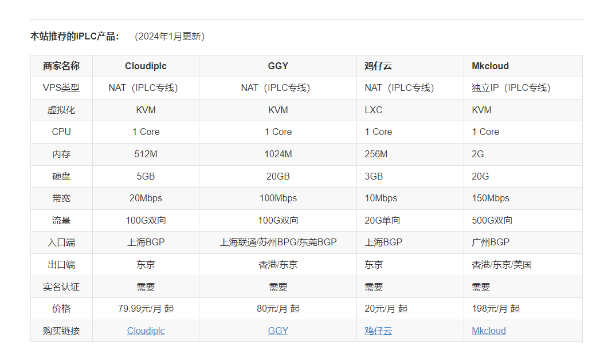

自建游戏加速器
- 作者:
- 淡白
- 创建时间：
- 2024-01-27 19:13:00
- 游戏加速器 自建 折腾 服务器 IPLC
摘要：自建游戏加速器是因为之前使用的加速器不支持mac平台，所以作者使用了sing-box搭建了一个加速器的共享加速服务，并支持mac。作者购买了一个共享IPCL线路的服务器，价格为20元/月。作者使用了自己之前开源的项目[gpp](https://github.com/danbai225/gpp)，并添加了规则路由，让http流量不走加速器，减少流量开销。根据作者的网络环境（四川联通），自建加速器的延迟比之前使用的正经加速器低了几毫秒，从65ms降到60ms左右。
自建游戏加速器
之前我一直在用某加速器昨年买了一年几百小时今年到期了。在使用加速器的时候，发现大部分加速器都是不太支持mac平台的。 因为我主要玩的游戏是英雄联盟国际服，是支持mac的。但是加速器不支持mac，所以我就使用sing-box做了一个加速器的共享加速的服务并且支持mac – gpp。
服务器
之前的方案，限制是还是需要一个windows服务器，于是我想着自己去搞个服务器，然后自己搭建一个加速器服务。加速器主要是用了IPLC的线路，这个线路是专门用来加速游戏的线路，但是这个线路的价格是比较贵的。
我大概的预算在500一年左右，这个预算想买到真的独享IPCL线路是不可能的，只能走共享路线。
在MJJ论坛逛了一圈，发现有个网站提供了共享IPCL线路的服务器，价格是20一月，这个价格是非常好了，于是我就买了一个。
虽然只有20g流量一个月但是这对加速游戏来说已经够用了。
另外我也发现了一些其他厂商提供的服务

搭建
继续使用我之前的开源项目gpp, 不过这次因为有流量的限制我给它添加了规则路由，让http流量不走加速器， 走我之前的TW Nat VPS。
这样减少流量的开销，更新游戏和下载完全没必要走ipcl线路。
加速效果
以我当前网络环境来讲（四川联通），比之前使用正经加速器延迟还低了几ms，之前65ms左右，现在60ms左右。